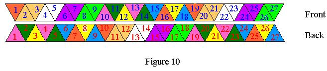
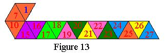
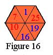
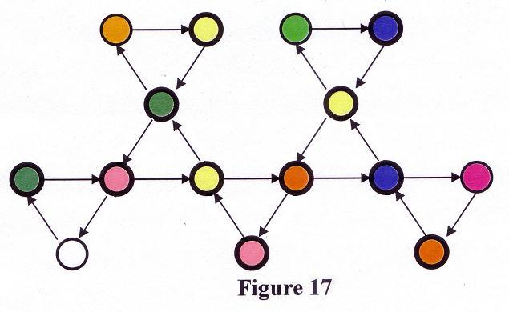

| For the nonahexaflexagon there are 100,698 initial faces.
Translations put the total number of mathematical faces at 2,718,576. Justification for these results are available at
Science Direct and the last paragraph on this page.
|
|
In order to build the nonahexaflexagon, you will need to start
with a roll of paper
tape. Start by folding an equilateral triangle at the
beginning of the tape and then reproducing it until you have
twenty-seven triangles. |
| 
|
Label the triangles as in Figure 10 and make sure you start from the front side. To wind the
pat 1,4523:
- rotate the 3 triangle over the 2 to get 3,2 *The tan triangles disappear*
- rotate the 5 under the 4 to get 4,5 *The white triangles disappear*
- fold the 4 under the 3 to get 32,54, and *The dark green triangles disappear*
- place the 3 under the 1 to get 1,4523 *The pink triangles disappear*
Notice that the one that is to the left of the comma is smaller than all of the digits to the right of it. This gives Figure 11.
|
 |
|
Next place 7 over 6, 9 under 8, and 8 under 7 to get Figure 12.
|

|
| The above winding of 5 + 4 is now repeated twice, adding 9
to each of the instructions the first time and nine more the last time.
Place 12 over 11, 14 under 13,
13 under 12, and 12 under 10 producing Figure 13. |
|
 |
| Next 16 over 15, 18 under 17, 17 under 16 yields Figure 14. |
 |
|
Continuing, 21
over 20, 23 under 22, 22 under 21, and 21 under 19 looks like Figure 15.
|
 |
 |
|
| Note that the blue 1 on the orange triangle is hidden
by the blue 25 on the purple triangle. Finish up the folding
by twisting 25 over 24, 27 under 26, and 26 under 25 (See Figure 16).
The last step in the construction is applying one piece of tape to the
common edge of 27 and triangle 1 that is touching it. This is a little
cumbersome
because 27 is hidden between triangles 25 and 26.
The Tuckerman Traverse, rediscovered by Emily McLean in 2002, is shown below in Fig. 17 and you have just constructed the orange face that is more centered in the Tuckerman Traverse. |
|  |